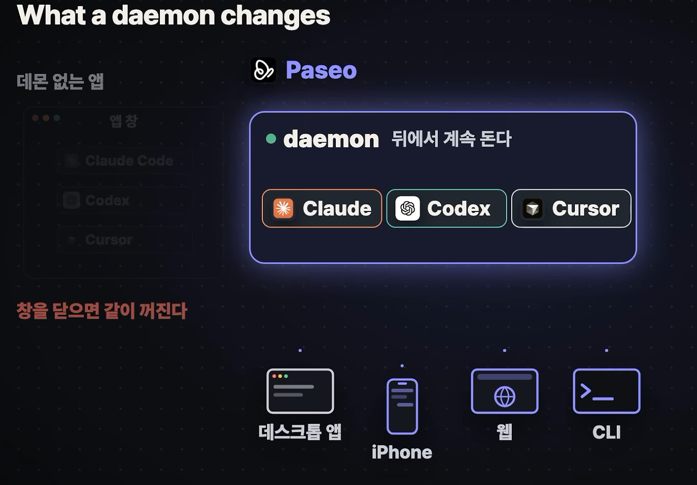
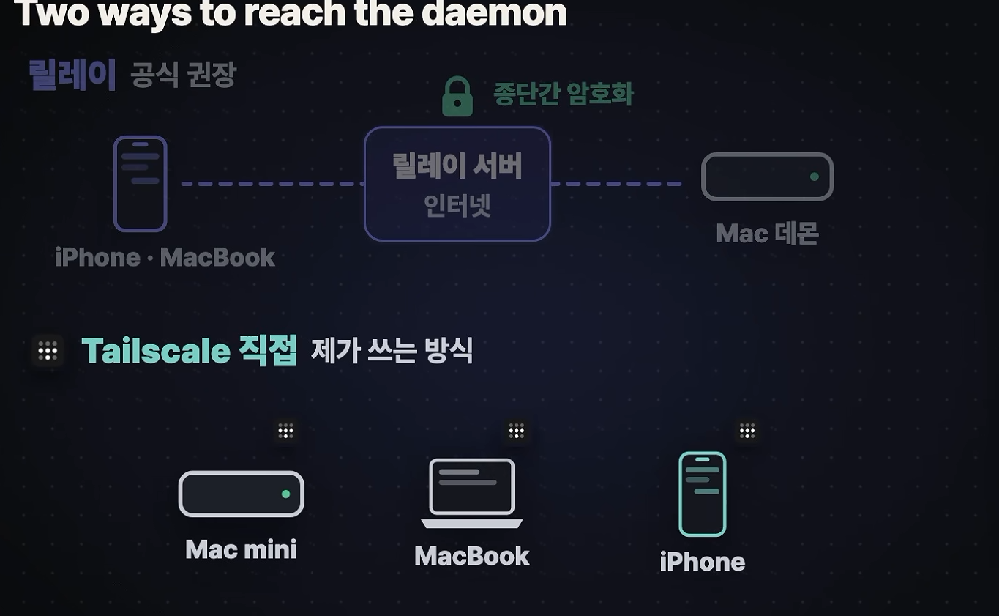
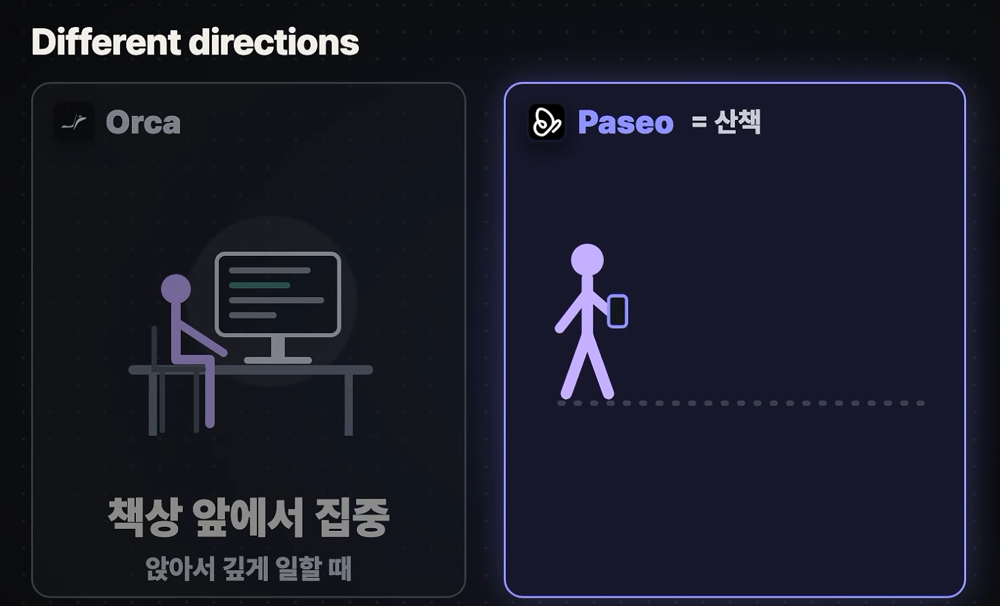
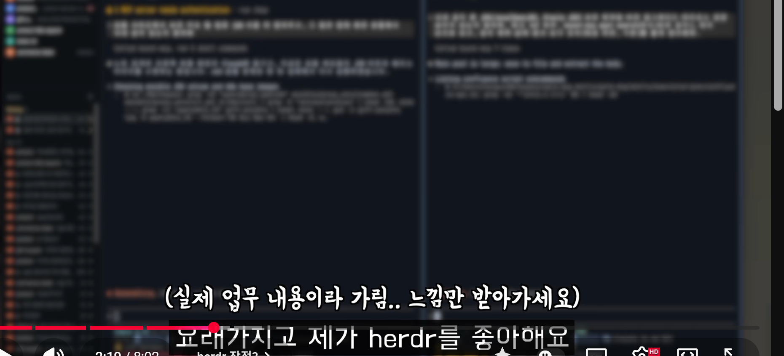
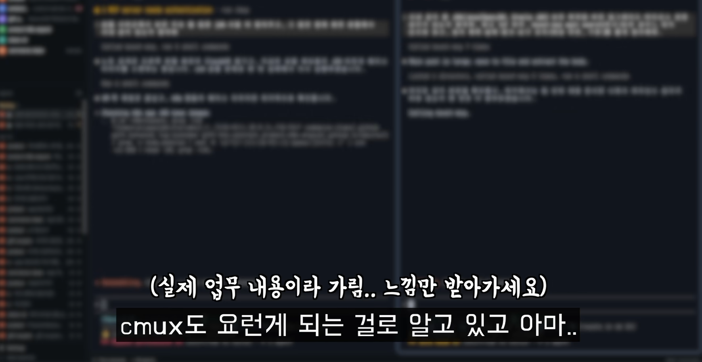
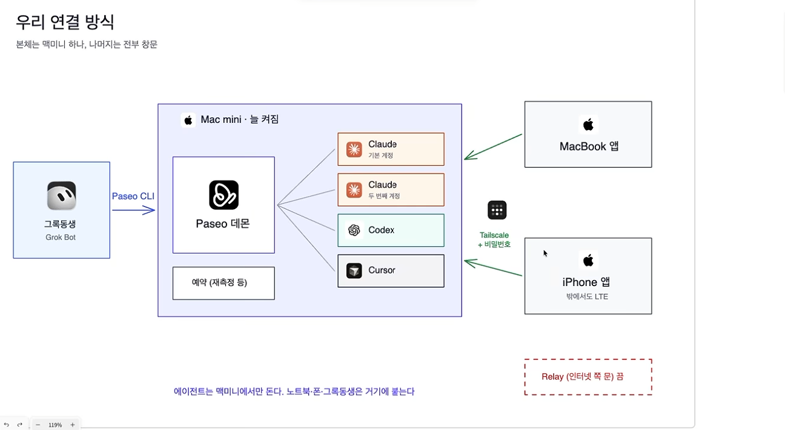
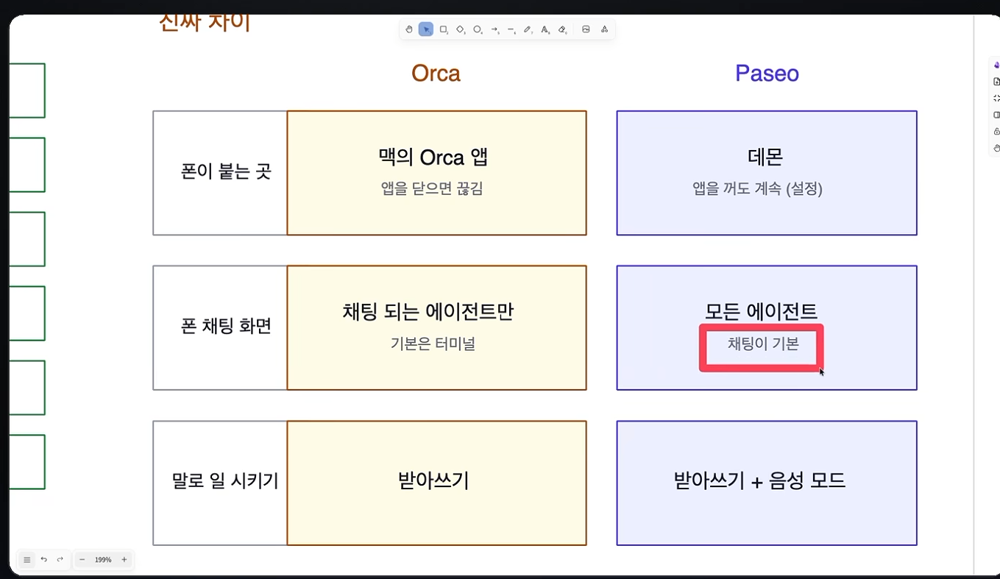
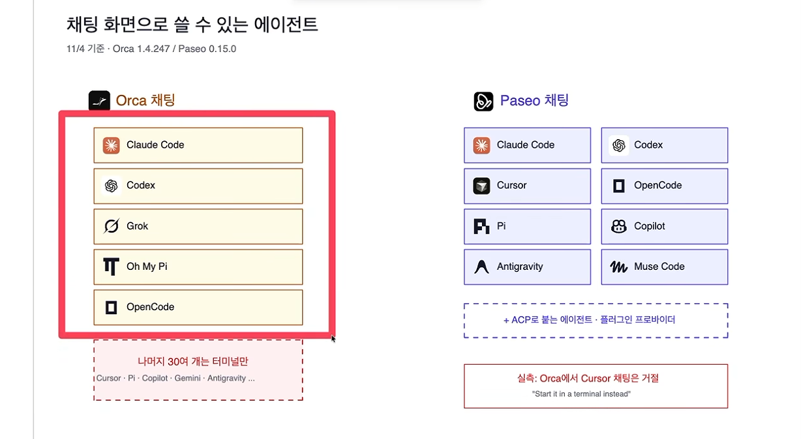
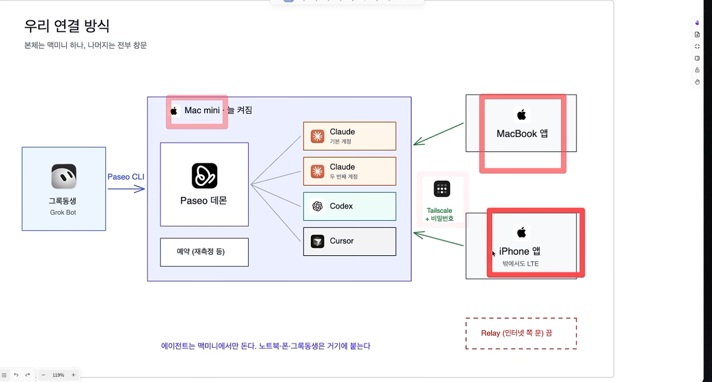

설치하고 시작하기
macOS·Linux에서는 공식 설치 스크립트를 사용할 수 있습니다. Windows나 WSL은 실제로 작업할 환경에 설치하고 그 환경에서 에이전트 CLI도 준비합니다.
curl -fsSL https://herdr.dev/install.sh | sh
herdr --version
herdrHerdr × Paseo · 2026-11-25 확인
Herdr로 터미널을 나누고, Paseo로 다른 기기에서 작업을 이어갑니다. Tailscale과 Relay를 언제 쓰는지 실제 연결 순서로 정리했습니다.
터미널 작업
워크스페이스는 프로젝트 단위, 탭은 작업 묶음, pane은 실행 중인 개별 터미널로 사용합니다.
왼쪽과 오른쪽 pane은 각각 독립 세션입니다. 한쪽에서 구현하는 동안 다른 쪽에서는 별도로 검토하거나 테스트할 수 있습니다.
원본 이미지 열기macOS·Linux에서는 공식 설치 스크립트를 사용할 수 있습니다. Windows나 WSL은 실제로 작업할 환경에 설치하고 그 환경에서 에이전트 CLI도 준비합니다.
curl -fsSL https://herdr.dev/install.sh | sh
herdr --version
herdrHerdr 안에서 오른쪽 pane을 열고, 각 터미널에서 별도의 에이전트를 실행합니다. 같은 파일을 수정할 때는 Git worktree 또는 파일 범위를 분리합니다.
herdr pane split --current --direction right
herdr pane list
herdr agent list먼저 에이전트 상태를 확인합니다. blocked는 승인이나 입력 대기, done은 작업 완료 상태입니다. 최종 반영은 각 pane의 diff와 테스트 결과를 확인한 뒤 결정합니다.
herdr status
herdr agent list
herdr pane read <pane_id> --source recent --lines 60pane ID는 명령 결과에서 복사하세요. 단축키는 설치 버전과 사용자 설정에 따라 달라질 수 있습니다.
실행 호스트
호스트의 에이전트 CLI를 데몬이 실행하고, 데스크톱·CLI·모바일 클라이언트가 해당 데몬에 접속합니다.

데스크톱이나 휴대폰은 데몬에 접속하는 화면입니다. 원격으로 다시 연결하려면 호스트와 데몬이 계속 실행 중이어야 합니다.
원본 이미지 열기Paseo Desktop을 설치해 실행합니다. 앱에 포함된 데몬이 시작됩니다. 작업에 사용할 Codex, Claude Code 등은 호스트에 설치하고 로그인까지 끝냅니다.
Paseo 시작 문서Node.js와 npm을 준비한 호스트에서 CLI를 설치합니다. 파일과 에이전트 계정이 올바른 호스트에 있는지 확인합니다.
npm install -g @getpaseo/cli
paseo
paseo daemon status연결 실습
모바일은 Relay 또는 Tailscale, 데스크톱과 CLI는 SSH 경로를 사용할 수 있습니다.

Relay는 페어링으로 연결하고, Tailscale은 같은 tailnet 안에서 호스트 주소로 직접 접속합니다. 아래에서 원하는 경로의 절차를 열어보세요.
원본 이미지 열기paseo daemon pairRelay는 옵트인 방식이고 종단 간 암호화를 사용합니다. 초기 연결에는 Tailscale이나 라우터 포트 개방이 필요 없습니다. 페어링 QR과 링크는 공개 게시물에 올리지 마세요.
Relay 공식 절차tailscale status와 tailscale ip -4로 장치와 주소를 확인합니다.~/.paseo/config.json의 기존 설정을 유지하고 daemon.listen에 호스트의 Tailscale IP와 포트를 지정합니다. 아래 주소는 예시입니다.6767, 설정한 비밀번호를 입력합니다. 공식 문서의 직접 연결 방식에서는 Use SSL을 끕니다.{
"version": 1,
"daemon": { "listen": "100.101.102.103:6767" }
}tailscale status
tailscale ip -4
paseo daemon restart
paseo daemon statusWSL에서 데몬을 실행한다면 해당 IP가 WSL 내부에 실제 할당되어 있는지 확인하세요. Windows 호스트의 IP를 WSL에서 그대로 바인딩할 수 있다고 가정하지 마세요.
Tailscale 설치 Paseo 비밀번호 설정 직접 연결 공식 절차agent-host는 실제 DNS 이름, Tailscale 주소 또는 SSH 별칭으로 바꿉니다.herdr --remote를 사용합니다. 원격 설정이나 버전 확인 안내가 나오면 화면의 지시를 확인합니다.127.0.0.1:6767을 사용합니다. Desktop에서는 Settings → Add host → Remote SSH를 고릅니다.ssh user@agent-host
herdr --remote ssh://user@agent-host
paseo --host ssh://user@agent-host ls -a세 명령은 클라이언트 터미널에서 실행합니다. 첫 명령으로 접속을 확인한 뒤 exit으로 돌아와 나머지를 실행하세요. Paseo SSH URL의 포트는 SSH 서버 포트입니다. 데몬 포트를 바꾸면 ?daemonPort=7777을 추가합니다. Tailscale 직접 연결 설정에서 데몬을 Tailscale IP에만 바인딩한 경우는 이 SSH 루프백 예시와 별도 구성입니다.
선택 기준

여러 worktree를 데스크톱에서 정리할 때는 Orca, 휴대폰에서 호스트에 자주 접속할 때는 Paseo가 편리합니다. 독립 터미널을 나란히 쓰는 작업에는 Herdr가 잘 맞습니다.
원본 이미지 열기| 기준 | Herdr TUI | Paseo | Orca |
|---|---|---|---|
| 주 작업 방식 | 독립 터미널 pane을 한 화면에서 운영 | 호스트 데몬 중심으로 에이전트 세션 제어 | 데스크톱 작업공간과 Git worktree 관리 |
| 원격 연결 | SSH로 원격 세션 접속 | Desktop·CLI는 SSH, 모바일은 Relay 또는 Tailscale | 원격 Orca 서버를 사설 네트워크에서 연결하는 베타 기능 |
| 잘 맞는 상황 | 구현·검토·테스트 터미널을 나란히 배치 | 항상 켜진 호스트에 휴대폰으로 접속 | 여러 프로젝트와 worktree를 데스크톱에서 정리 |
참고 캡처의 앱 버전과 제공 기능은 달라질 수 있습니다. 최신 지원 에이전트와 원격 기능은 각 공식 문서에서 확인하세요. Orca 원격 서버 문서
실행 확인
직접 확인한 항목에 체크하세요. 체크 상태는 이 브라우저에 저장됩니다.
문제 해결
ssh -v user@agent-host로 네트워크, 호스트 키, 인증 키 문제를 순서대로 확인하세요.paseo daemon status로 실행 여부를 확인하고, SSH 접속이 참조하는 데몬 포트와 비밀번호를 대조하세요.ss -ltn으로 데몬이 듣는 주소를 확인할 수 있습니다.참고 화면
주제별로 펼쳐서 전체 13장을 확인하세요. 이미지 속 기능과 버전은 캡처 당시 기준입니다.





